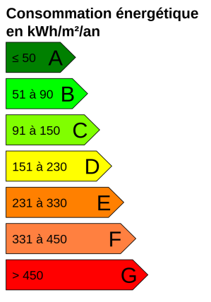
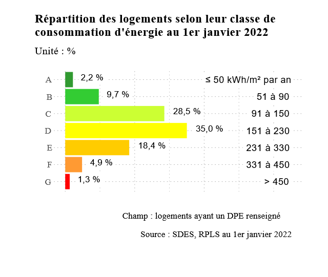

04 Séquence A · Activité 04 · Matière
Diagnostic de Performance Énergétique (DPE) d’une habitation
Identifier les paramètres qui influencent l’efficacité énergétique d’un bâtiment.
Identifier les paramètres qui influencent l’efficacité énergétique d’un bâtiment.
O1 - Caractériser des produits ou des constituants privilégiant un usage raisonné du point de vue développement durable.
CO1.3. Justifier les solutions constructives d’un produit au regard des performances environnementales et estimer leur impact sur l’efficacité globale.
Quels sont les paramètres influents l’efficacité énergétique dans le bâtiment ?
Comment justifier une solution constructive d’un point de vue efficacité énergétique ?
Travail individuel — 1h.
Répondez aux questions suivantes.


Ce site a été réalisé par Abdellah CHELOUAH.